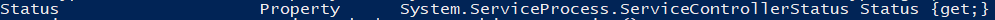

Where-Object (?, where)
Where-Object cmdletWhere-Object cmdlet (alias ?) lets us filter objects based on their properties.
example:get-service | ? {$_.status -eq "running"}
we know that get-service(and so the services returned from it) has the “status” property buy running the cmdlet get-member
